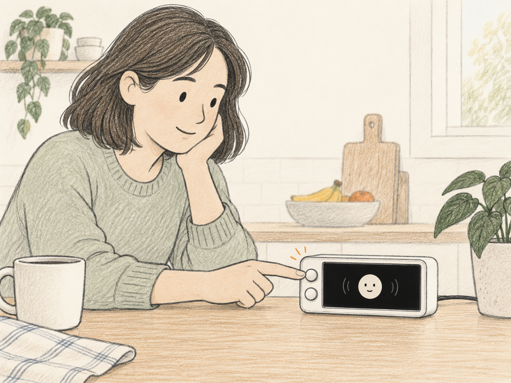
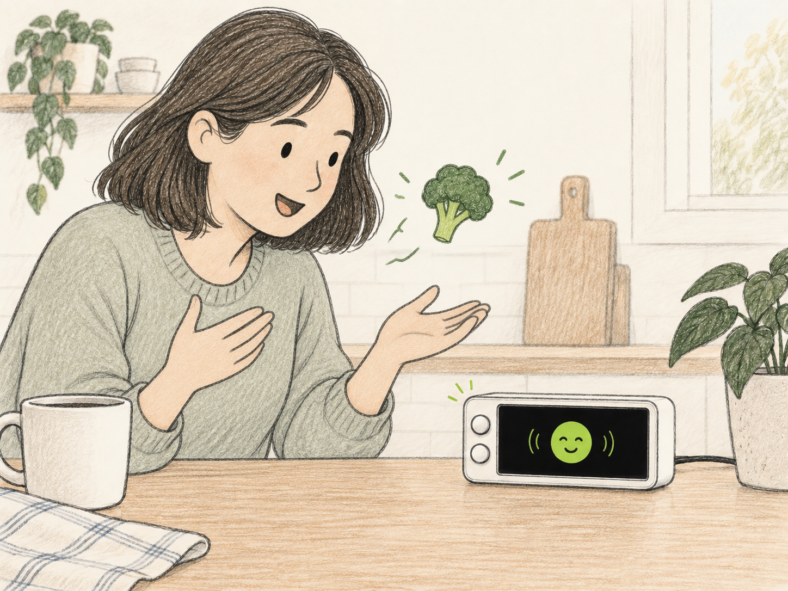
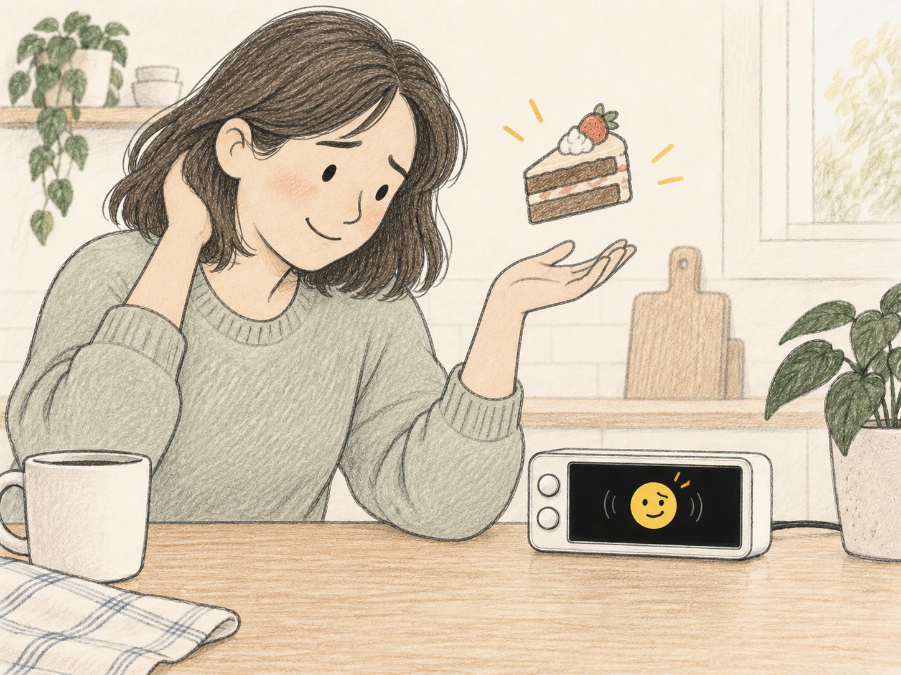
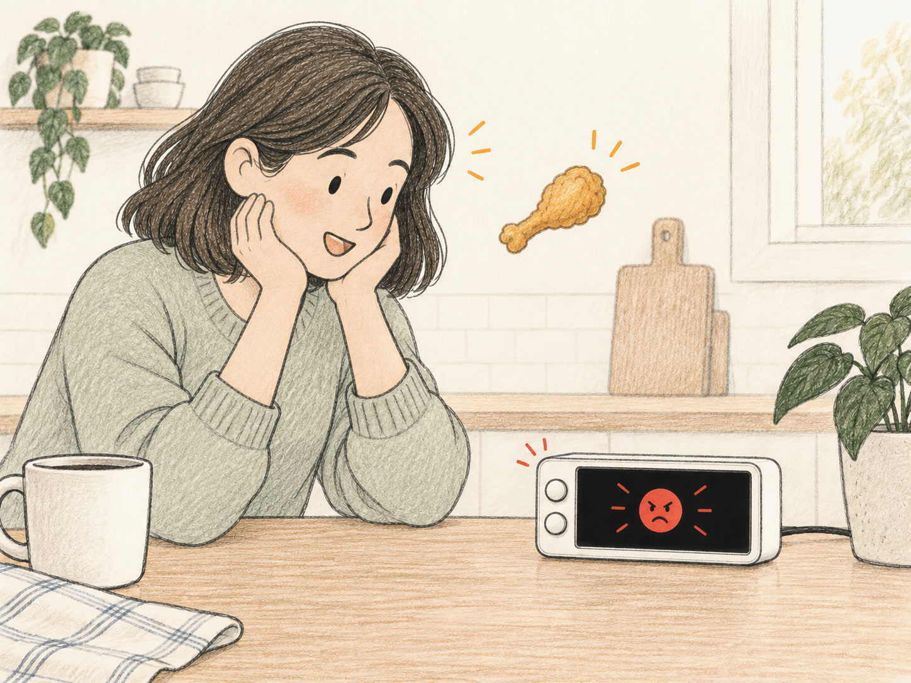
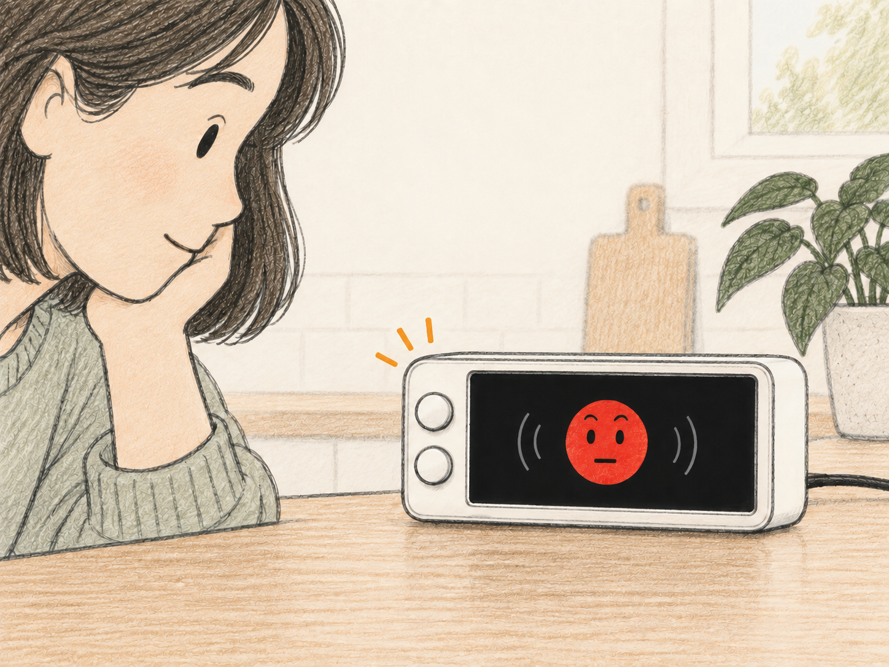
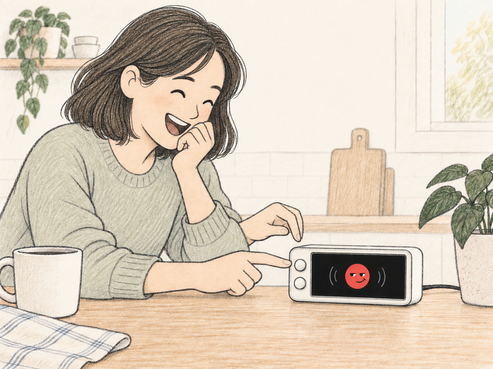

Download PNG
The Roast Coach
One check-in · three food reports

01
Press to check in
TOP BUTTON · LISTENING

02
Broccoli earns a cheer
GREEN · PROUD

03
Cake raises an eyebrow
YELLOW · DRY SARCASM

04
Then: fried chicken
INTERRUPTION · RED

05
Hold the stare
ONE COMIC BEAT

06
The punchline lands
USER LAUGHS · PRESS TO STOP